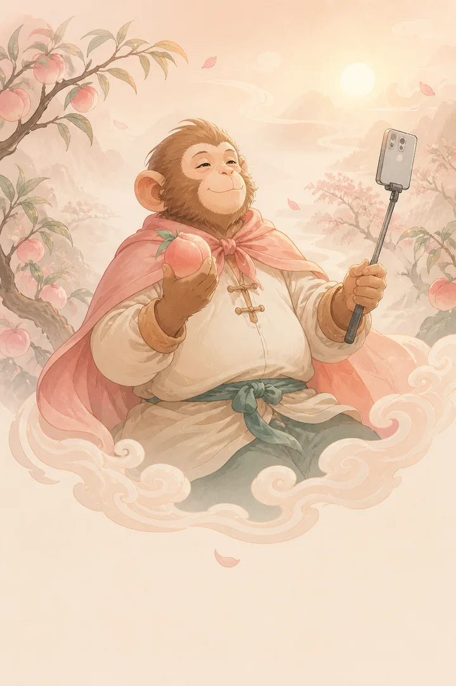

自拍开场
老朋友，好久不见。俺老孙今天来看看人间的桃。

今儿挺好每一颗桃，都藏着一个故事。
一张照片，一句话就够。你提供的画面与故事，都会进入最终作品。
不是选模板，是选择这段生活最值得被看见的情绪。
照片、人物、地点和故事已经被编排进这张专属海报。
不是电影预告，是像朋友一样记录生活的30秒自拍视频。
老朋友，好久不见。俺老孙今天来看看人间的桃。
等等，俺老孙先替大家尝一口。这不是偷吃，这是专业鉴定。
生活再累，也得给自己留一口甜。
从一句生活，到一张海报和一支 Vlog。大圣已经陪你走完第一段旅程。